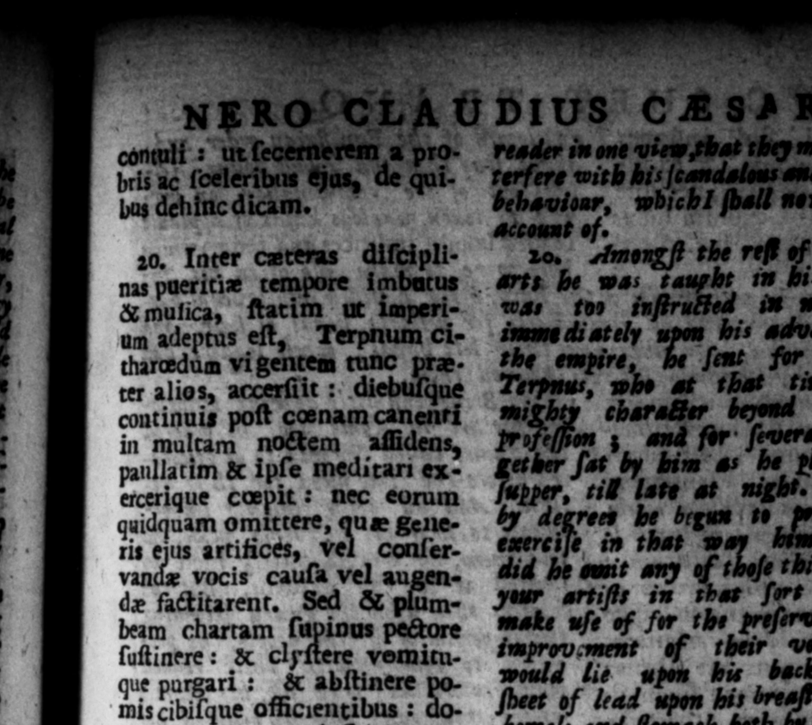
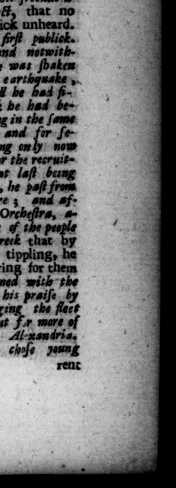

E 2. * "i td. l p 4 _— N 4 * 2 " n . * =” ö * : \ b * N e R th. tet * 3 & p \— FLU - *"2* oY « l — \ a> FI ** e ; RYE 1 nEROCCLAUDIUS CASAR ww contull ut ſecernerem à pro - reader in one view that they might n in- Z bris ac (oeleribas Has, de hol terſere with bis Jeandelews end uilginess | # l bus dehincdicam. —2 bie h ball new g e Account of. | | *. 2 20. Inter texas diſcipli- 20, the reſt of the liberal nas pueritiæ tempore imbacus .. a be was raupht im 21s yourh, be& muſica, ſtatim ut imperi- was 10 inftruffed in moſeck, and | un adeptus eſt, Terpnum ci- imme di ately upon bis advancement 6" tharedum vi gentem runc pra. he empire ter alios, accerſiit: diebuſyue continuis poſt nam canenri in multam no&em aflidens, panllatim & ipſe meditari exercerique cœepit: nec eorum quidquam omittere, que generis ejus artifices, vel conſervandæ vocis cauſa vel augenplum: de fatitarent, Sed & of 2 beam chartam ſupinus pectore mae wſe of for he Py. _ ſuſtinere : & clyſtere yemicu- teak: wie hs: que pargarl : R W__ clear bis mis cibilque amcientl : | d s A ach both by womats and nec \ landliente ves 2 — 2 and wu, and ferbear the Jam een n eating fruit, or vituals prejudicial 1b Pong in ſcenam concuplvit : rn by hit prouhiade inter familiares Gra. fetency (the 2 * was naturally cum proverbium jactans, 0c» neither loud nor clear) be was deſirous culte muſice nullum eſſe reſpec- ering wpon the , frequent= tum. Et prodiit Neapoli pri- 7 throwing out among 25 friends. @ mum: ae Nez neue qui- greek proverb to this effet, that no dem repente BF op crea was had for muſic unheard. tro, ante Cantare deſtitit quam fra he made bis publick.. inchoatum abſolveret e. * . at Naples ; of notwithIbidem ſæpius & per complu- aul the whole theatre was ſbaken res cantavit dies: ſumpto e- by 2 ada ſhock of an 4x tay 7 4 tum ad reficiendam vocem yet by gave not over, till be had brevi tempore, impatiens ſe- bel — ie ce of muſick he had becreti a balneis in theatrum fore him, He plaid and ſung in the ſame tranſiit, mediaque in orche- place ſeveral times fn. and for ſeſtra frequente populo epulatus, vera day: together, taking only no fpaullum ſubd id and then @ littl: reſpite for the recruit» . Met. aliqu ſe ſueffrti tinniturum Graco ler. ing of his voice ; till at laſt being Mone promiht. Captus autem Weary of private practice, he paſt modulatis Alexandrinorum the bath into the theatre ; and af| Jandacionibus qui de novo com- ter 4 refreſhment in the | Orcheſirs, a. meatu Neapolim conftuxerant, mia a crowded affembly of the peaph — Alexandria evocavit. he promiſed them in greek that <que eo ſegnius adoleſcentu- - the benefit of a littſe tipplingy he los equeſtris ordinjs, & quinque would make their ears ring for them amplius millia e plebe tobu - again. And being — with the {tiſime juventutis undique e- ſongs that were 21 praiſe by legic, qui divifi in factiones, ſore Alexandriens ing the fleet plauſunm genera condiſcęrent, juft then arrived, be (ent Ir mare of ( bombos, & imbrices, & teas the like e 5 from Al-xandri vocabaut ) opetamque nava- And mewithflanding be chyje noun reac

